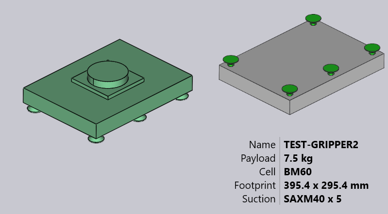
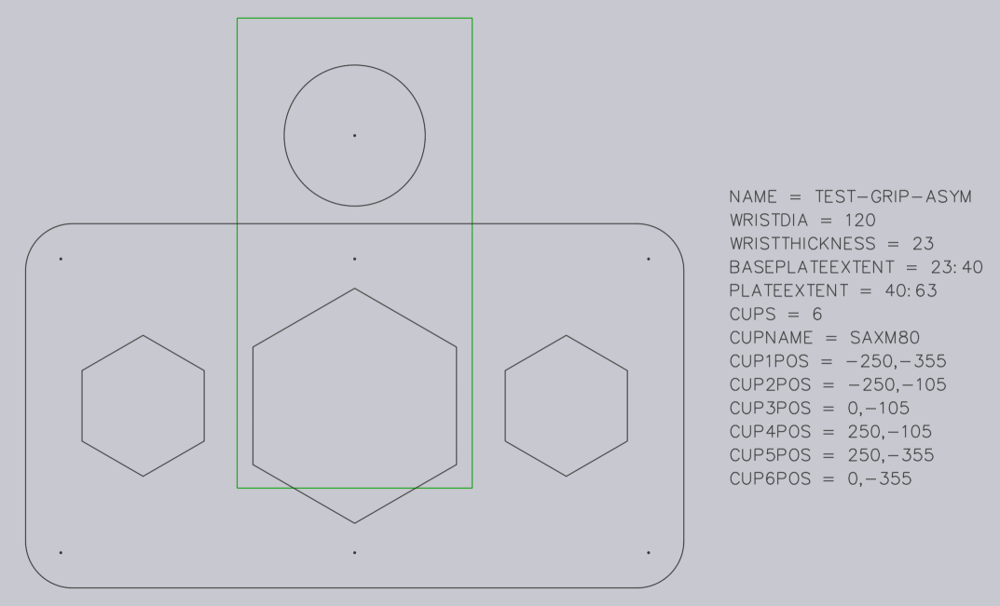
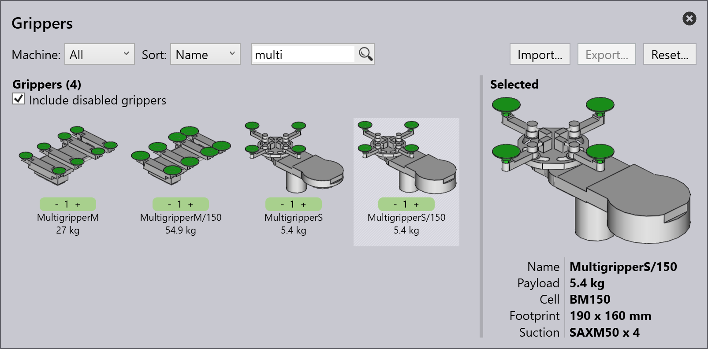

Importera grepp från DXF
Ett vakuumsuggrepp för BendMaster-maskinerna kan importeras från en DXF-fil. DXF-filen representerar överst-vyn av greppet (överst-vy betyder från sugkopparna, INTE från BendMaster). POLYLINE-entiteter i DXF-filen ger formen på greppplattan och TEXT-entiteter ger ytterligare information om greppet (som dess namn, tjocklek och sugkoppsplacering).
Filer i det erforderliga formatet (DXF, ARV eller GEO) kan importeras till Bend-databasen.
För att importera ett grepp:
-
Öppna Database i TecZone Bend.
-
Välj alternativet Bend Grippers från listan.
-
Klicka på alternativet Import… och välj ett grepp som DXF-fil från katalogen.

Här är hur detta grepp ser ut efter import (visas i två vyer från nedanifrån och ovanifrån).

Grundläggande grepp
Se den enkla ritningen som visas nedan, som definierar ett grepp och kan sparas som en DXF-fil för att importera tillbaka i Grepplagret.

Här är några viktiga punkter om hur DXF:en är ritad:
-
Ritningens ursprung (0,0) motsvarar robotens handledscenter. Du kan se detta representerat av en punkt och en cirkel i figuren. (Både punkten och cirkeln behövs egentligen inte för greppimporten, eftersom greppets centrum är implicit alltid vid ursprunget).
-
Denna ritning har också några POINT-entiteter som representerar var och en av sugkopps platserna. Återigen, dessa är främst för att göra ritningen tydligare och används inte faktiskt av greppimportören (sugkoppspositionerna specificeras av textentiteter).
-
Den faktiska plattformen är ritad som stängda POLYLINE-entiteter. Om du har andra polylinjer inuti den yttre blir de hål i plattan.


Tvålagers grepp
Lite mer komplexa grepp kan modelleras med ett separat BASEPLATE-lager. Skapa ett lager med namnet BASEPLATE i DXF-filen och rita några stängda POLYLINE-former i det lagret. Då kan detta lager ha separata Z-extruderingsgränser specificerade av BASEPLATEEXTENT-nyckeln. Verktygen som behövs för att skapa och redigera lager har nu lagts till.
-
Klicka på Related när en ritning redigeras.
-
Välj menyn Layers för att lägga till nya lager, byta namn på dem, ställa in färger och ändra linjestilar.

-
I ritningen kan du genom att klicka på en entitet ändra lagret för den entiteten.

Lager visas i entitetspanelen endast om det finns flera lager i ritningen. -
Efter att ha redigerat ritningen med dessa verktyg, spara ritningen i DXF-format. Här är en DXF ritad med ett sådant BASEPLATE-lager (visas grönt i bilden).

För detta grepp sträcker sig handleden från Z=0 till Z=23. Därefter sträcker sig basplattan (grön) från Z=23 till Z=40, som indikeras av nyckeln BASEPLATEEXTENT. Slutligen sträcker sig den faktiska greppplattan (som håller sugkopparna) från Z=40 till Z=63, som indikeras av nyckeln PLATEEXTENT. Greppplattan har också några hexagonala hål i den. När det importeras ser detta grepp ut som bilden nedan:

Flerlagers grepp
Flerlagers grepp är en uppdaterad version av Tvålagers grepp där fler än två lager kan skapas och importeras med TecZone Bend. För att använda ett flerlagers grepp måste DXF:en innehålla texten VERSION = 2. Ett exempel på flerlagers grepp visas nedan:

Varje lager måste definieras med sina utsträckningar som LAYER_1 = 23 : 35. Entiteterna i detta lager kommer att läggas till dessa utsträckningar. På liknande sätt definieras kopparna i formen, CupNo = X pos, Y pos, [Cup type, Mounting height, Cup group].
| X- och Y-positioner är obligatoriska. |
Olika möjliga definitioner för sugkoppar förklaras nedan:
CupNo = X pos, Y pos med namnet på koppen specificerat i CUPNAME som i föregående version
CupNo = X pos, Y pos, Cup type, där varje kopptyp definieras separat (för ovala
koppar varierar namnen med vinkel)
CupNo = X pos, Y pos, Cup type, Mounting Height
CupNo = X pos, Y pos, Cup type, Mounting Height, Cup Group
CUP1 = 275, 314, SAOB60x30_90grad_ged, 72, 2
Om monteringshöjden inte är specificerad anses maximal plattutsträckning som standard. På liknande sätt kommer sugkoppsgruppen att ställas in på 1, om den inte definieras.
| För närvarande stöder TecZone Bend inte olika monteringshöjder för sugkopparna. |
När det importeras ser ett exempelgrepp ut som bilden nedan:


Flerkrets grepp
Du kan skapa ett flerkrets grepp (ett grepp som har flera oberoende vakuum kretsar). För ett sådant grepp tilldelas varje sugkopp ett icke-noll gruppnummer.
Tilldela suggrupper med ett speciellt format för CUP1POS, CUP2POS, etc som visas nedan:
CUP1POS = 340,120 #6
CUP2POS = 420,140 #8
Värdet efter # är suggruppnumret för koppen. I detta exempel är kopp 1 tilldelad till suggrupp 6, kopp 2 är tilldelad till suggrupp 8, och så vidare.
För att ett flerkrets grepp ska konfigureras korrekt måste varje kopp tilldelas ett suggruppnummer på detta sätt.
| Det maximala antalet sugkoppar som kan användas i ett grepp är begränsat till 100. Om du importerar ett grepp med mer än 100 sugkoppar, kommer TecZone att visa ett felmeddelande om misslyckad import. |
Bilden nedan visar några exempelgrepp inuti böjnings databasen Bend Grippers.
